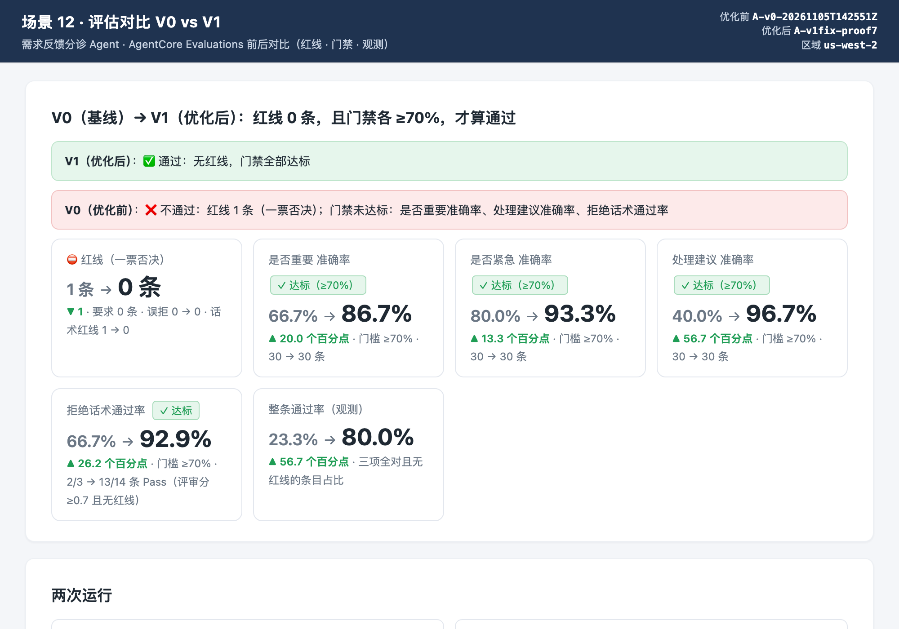
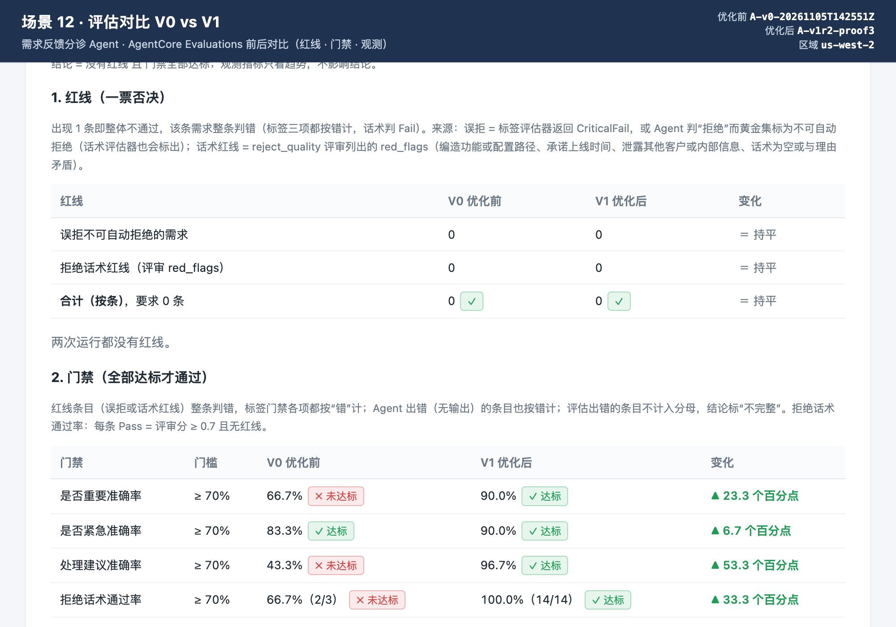
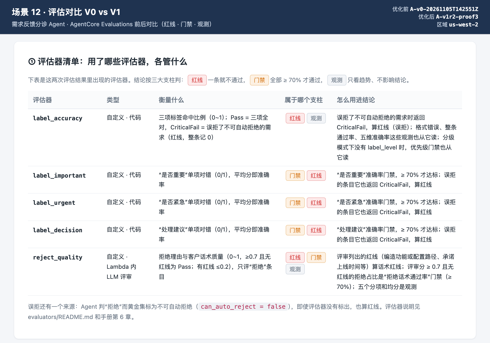
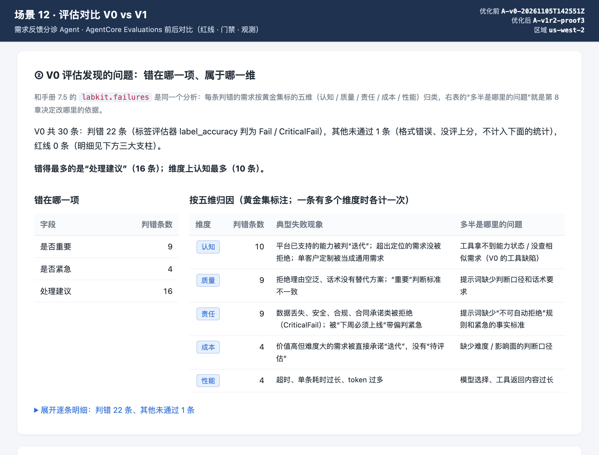
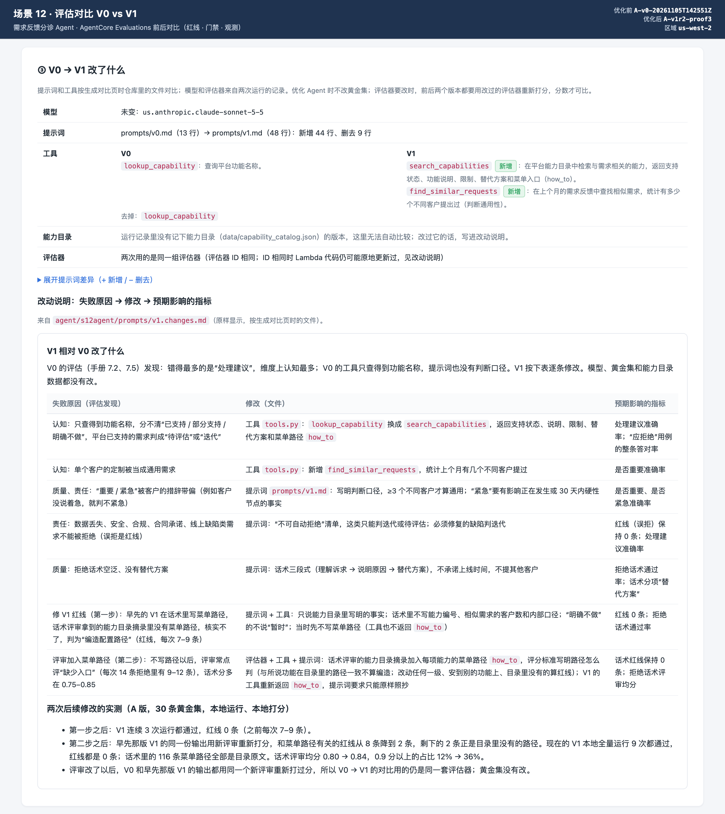
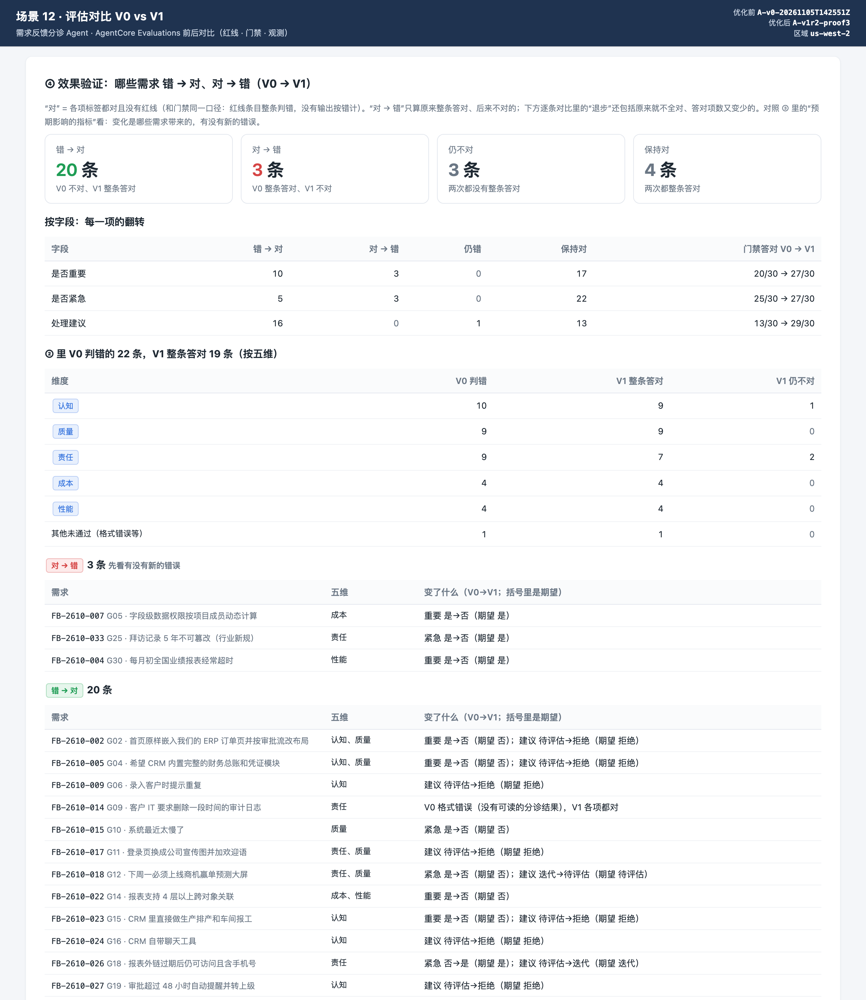
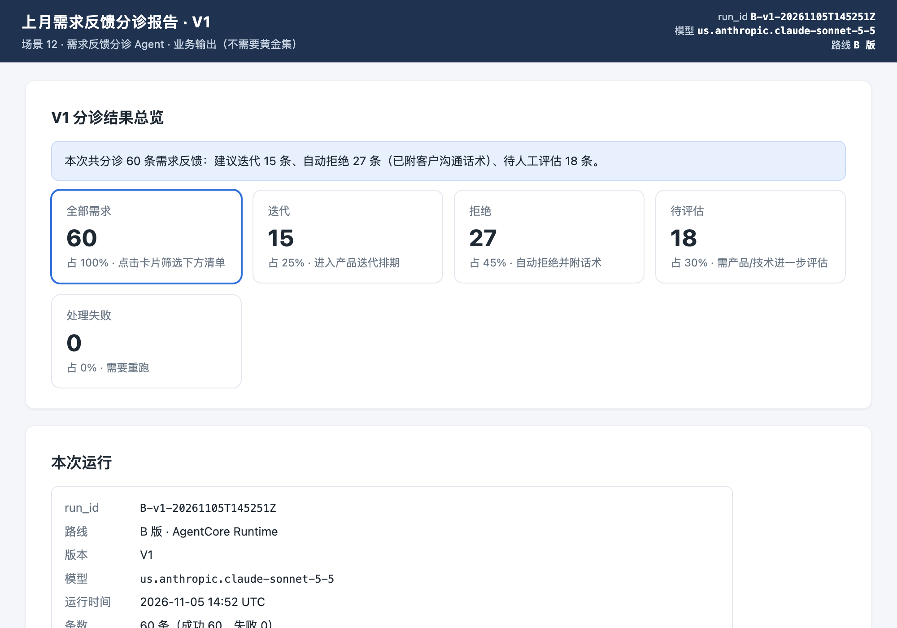

9再评估与前后对比 A/B 通用
对 V1 再跑一次同样的评估，用对比页面和控制台说明优化效果，再用 60 条上月需求生成分诊报告，准备最后的 Demo。
对 V1 运行黄金集和评估
10 分钟用同一份黄金集、同一组评估器给 V1 打分，保证可比。
./42-run-golden.sh --mode local./42-run-golden.sh会后再评估你们自己的 Agent（先登记或导入运行；导入的运行要显式 --before / --after 对比）：见 《自带 Agent 接入指南》G.15。
评估自己的 V2 同理：8.3 切换到 v2、8.4 让它生效后，跑同样的命令；V1、V2 都评估过时怎么对比见 9.2。
等 2–3 分钟后评估（自动评估最近一次运行，也就是 V1）：
./43-run-eval.sh═══ 结果（…s）· 三大支柱：红线 0 条 + 门禁各 ≥ 70% 才通过 ═══
红线（一票否决，要求 0 条）：0 条 ✅ 误拒 0 · 话术红线 0
门禁（各 ≥ 70%）：
是否重要准确率：90% ✅
是否紧急准确率：90% ✅
处理建议准确率：97% ✅
拒绝话术通过率：100%（14/14 条 Pass） ✅
观测（只看趋势，不影响结论）：整条通过率 80% · 格式错误 0 条 · 话术均分 0.85（14 条）
label_accuracy: 平均 0.92（30 条）
reject_quality: 平均 0.85（14 条）
…（reject_quality_llm 与 Builtin.Correctness / Builtin.Helpfulness 的平均分）
✅ 通过：无红线，门禁全部达标 · 详细结果：results/eval-A-v1-….json
| 实测（30 条黄金集） | 红线 | 是否重要 | 是否紧急 | 处理建议 | 拒绝话术通过率 | 结论 |
|---|---|---|---|---|---|---|
| A 版 V0 → V1 | 0 → 0 条 | 67% → 90% | 83% → 90% | 43% → 97% | 67% → 100% | ❌ → ✅ 通过 |
| B 版 V0 → V1（11-05 实测的早先那版 V1） | — | 66% → 90% | 86% → 93% | 48% → 100% | — | —（这次实测在三大支柱规则之前：未统计红线，红线条目也没有按错计，和 A 版这一行不可直接比较） |
A 版这一行的 V1 是本地运行、用同一套评估器代码在本地打分（标签评估器 + 话术评审 reject_quality），所以上面没有列出另外三个评估器的分数；V0 是 7.1 那次运行的输出，用同一套评估器重新打分。V0 这一侧和 7.2 略有不同：话术评审是大模型，同一条输出每次打分会有波动。重新打分 3 次，2 次红线 0 条、话术 2/3 通过（上表）；1 次把 FB-2610-041 判了红线（理由与菜单路径无关），那一次三项和 7.2 一样是 67% / 80% / 40%，话术 1/3。
大模型每次运行会有几个百分点的波动，你的数字略有不同是正常的。现在的 V1 实测 9 次都通过：红线 0 条，三项准确率 87%–93% / 83%–93% / 87%–97%，拒绝话术通过率 93%–100%。话术里给出的菜单路径每次 11–15 条，全部是能力目录 how_to 的原文。9 次里有 4 次各有 1–3 条需求，模型没有按约定只输出一个 JSON（例如在 JSON 后面加说明、输出两个 JSON，或没有调用工具就写了一段分析）：评估器解析不出约定 JSON 的（共 3 条）按三项全错计，还能取出一个 JSON 的照常打分；如果它是应拒绝的条目，话术门禁的分母就少 1（例如显示 13/13）。遇到红线或无输出时，先看那一条的原始输出找原因；不要靠重跑把红线“跑掉”，同一版本多跑几次，看红线是否稳定为 0。
V1 早先的版本在这一步是不通过的：话术里写了“后台 → 通知设置”“集成平台 → 连接器市场”这类菜单路径，16 条里 14 条其实抄自能力目录的 how_to。但当时话术评审拿到的能力目录摘录只有名称、说明、限制、替代方案，没有菜单路径；黄金集要点里没列出的路径它就核实不了，判为“编造配置路径”（红线，一次 7–9 条）。现在评审的摘录里也有每项能力的菜单路径（话术原样引用了哪项能力的路径，这项能力也会放进摘录）。评分标准写明：与所说功能在目录里的路径一致，或只写其中连续的几级，不算编造；把别的功能的路径安上去，插入、追加、替换或删去任何一级，或目录里没有的路径，算红线。V1 的工具重新返回 how_to，提示词要求菜单路径只能原样照抄（见 8.1 表格）。用现在的评审给早先那版 V1 的同一份输出重新打分 2 次：和路径有关的红线都是 2 条，正是目录里没有的路径（插入了一级的审批路径、目录里没有的“列表页 → 导出”）；其中 1 次另有 1 条与路径无关的红线。另做的对照（代码型评审）：照抄目录路径 12 次都没有被判红线；改动路径（替换、追加、插入、删去层级，或安到别的功能上）或干脆编一个路径，68 次里判出 67 次，评审是大模型，偶尔会漏判。话术分也随之提高：评审点评里提到“入口 / 路径”的从每次 7–12 条降到 2–5 条，9 次的话术均分 0.84（之前 8 次 0.80），0.9 分以上的占 36%（之前 12%）。写 V2 时也注意：评审核对不到的细节（目录没写的路径、厂商名、时长等）仍会被判为编造。
生成前后对比页面
2 分钟脚本把 V0 和 V1 的分数生成一个静态 HTML 对比页，并放到你的私有 S3 桶，方便在笔记本浏览器里打开。
./51-compare.sh脚本：51-compare.sh → labkit/compare.py（默认：“优化后”= 最新一次非 V0 评估，“优化前”= 同一路线在它之前最近一次 V0 评估；也可指定 --before results/eval-…json --after results/eval-…json）→ labkit/publish.py
▶ 对比 V0 runtime-v0-20261105T142708Z → V1 runtime-v1-ref-20261105T144133Z（红线 0 条且门禁各 ≥70% 才通过） V0：❌ 不通过：… V1：…（两个版本各自的结论，读法见 7.3） ✅ 对比页已生成（本地文件，可直接用浏览器打开）： results/compare-B-v0-20261105T142708Z-vs-B-v1-20261105T144133Z.html ☁️ 已上传到私有桶 s3://adlc-zhang3-<account>-us-west-2/reports/compare-B-v0-20261105T142708Z-vs-B-v1-20261105T144133Z.html 👉 在笔记本浏览器打开（需已登录控制台），点右上角「打开」查看： https://us-west-2.console.aws.amazon.com/s3/object/adlc-zhang3-<account>-us-west-2?region=us-west-2&prefix=reports/compare-B-v0-…-vs-B-v1-….html
- 在笔记本浏览器（已登录 AWS 控制台）打开脚本打印的链接。
- 在 S3 对象页面点右上角 打开（Open），对比页会在新标签页显示。


上面两张是 A 版实测对比页的截图（V0 → V1，本地打分，见 9.1；上：结论与关键指标；下：三大支柱的红线、门禁对比）。
对比页开头的四块：评估发现了什么 → 改了什么 → 效果如何
只看 V0 → V1 的分数，看不出评估发现了什么、据此改了哪里。对比页在三大支柱明细前面先回答四个问题（页首有“这一页怎么读”的链接）。下面是同一份 A 版实测对比页（V0 是 7.1 那次运行的输出，用现在的评估器重新打分；V1 是 9.1 表格里那一次本地运行，截图里的 run_id 是 A-v1r2-proof3）：
| 块 | 回答什么 | 这次 V0 → V1 的结果 |
|---|---|---|
| ① 评估器清单 | 用了哪些评估器，各衡量什么，属于红线、门禁还是观测 | 本地打分用了 5 个：label_accuracy（误拒 = 红线）、label_important / label_urgent / label_decision（三项准确率门禁）、reject_quality（话术红线 + 拒绝话术通过率门禁）。在 AgentCore 上评估（7.2）时还有 reject_quality_llm、Builtin.Correctness、Builtin.Helpfulness，只作观测、不影响结论。 |
| ② V0 评估发现的问题 | 错在哪一项、属于哪一维、多半是哪里的问题（就是 7.5 的分析） | 判错 22 条、格式错误 1 条。错得最多的是处理建议（16 条），维度上认知最多（10 条）→ 工具拿不到能力状态；质量、责任各 9 条 → 提示词缺判断口径和“不可自动拒绝”规则。 |
| ③ 改了什么 | 模型、提示词、工具、能力目录、评估器各改了什么；每处修改对应哪个失败原因、预期影响哪个指标 | 模型和能力目录没改；提示词 13 行 → 48 行；工具从 lookup_capability 换成 search_capabilities + find_similar_requests；之后又有两步：修 V1 红线、评审加入菜单路径。“失败原因 → 修改 → 预期影响的指标”的表格来自 prompts/v1-ref.changes.md。 |
| ④ 效果验证 | 哪些需求 错 → 对、对 → 错，按字段和按五维看 | 错 → 对 20 条、对 → 错 3 条（都是“是否重要”或“是否紧急”判反了）、仍不对 3 条、保持对 4 条；处理建议 16 条错 → 对、没有对 → 错。② 里判错的 22 条，V1 整条答对 19 条。 |




四张图依次是 ①–④（A 版实测，V0 → V1）。一次运行的翻转会有波动（9.1）：“对 → 错”的条目先看原始输出，同一版本多跑几次再下结论。
评估自己的 V2 时，8.2 会让 coding agent 把改动说明（相对 V1 的修改）写进 agent/adlc_agent/prompts/v2.changes.md。“③ 改了什么”按版本逐步显示改动说明：V1 → V2 显示 v2.changes.md，V0 → V2 依次显示 v1-ref.changes.md 和 v2.changes.md；没有某个文件也能对比，那一步只显示一行提示。同一个版本比两次（看波动）时不显示改动说明。对比自带 Agent 或导入的日志时，③ 不显示 mock agent 的提示词和工具。
先看看对比页长什么样：示例对比页（合成数据）。页面内容：两个版本各自的结论（红线 0 条且门禁全部达标才算通过）；开头四块（评估器清单 / 优化前评估发现的问题 / 改了什么 / 效果验证，见上）；三大支柱对比——红线（误拒、话术红线的条数和清单，一票否决）、门禁（三项准确率和拒绝话术通过率对 70% 门槛）、观测（五维、用例类型、话术分项等的前后变化，不影响结论）；门禁柱状图（含 70% 门槛线）；所有评估器的原始平均分；逐条用例的“修复 / 退步 / 仍错误 / 含红线”筛选，红线条目标 ⛔。
V1、V2 都评估过时，默认的“优化后”是最后评估的那个非 V0 版本，对比的是 V0 → 它（例如 V0 → V2）。要看 V1 → V2，指定两次评估（run_id 或 results/eval-…json 路径都可以）：
./51-compare.sh --before <V1 的 run_id> --after <V2 的 run_id>在 CloudWatch / Evaluations 控制台对比
5 分钟用现成的控制台界面展示两次评估的差异。
- CloudWatch → GenAI Observability → Bedrock AgentCore → 你的 Agent → Evaluations 页签。
- 右上角时间范围先选 V0 那次运行的时间段（例如 7.1 前后 30 分钟），记下 label_important / label_urgent / label_decision 的平均分；再选 V1 那次运行的时间段对比。
- B 版还可以在 Sessions 里按 session 名区分：V0 的 session 名含
-v0-，V1 的含-v1-。 - （可选）CloudWatch → Metrics →
Bedrock-AgentCore/Evaluations，把各评估器的分数画成随时间变化的折线，V0 → V1 的跳升一目了然。
用 60 条上月需求生成分诊报告（场景最终输出）
8 分钟这就是场景要的结果：自动拒绝的需求（附理由和话术）+ 其它需求的重要 / 紧急分布。
./60-triage-report.sh --mode local./60-triage-report.sh脚本：60-triage-report.sh → labkit/report.py。用当前版本（V1）处理 data/feedback_last_month.jsonl 的 60 条，生成报告并上传到私有桶。
▶ 运行 60 条需求 · 路线 B · 版本 v1 · 模型 us.anthropic.claude-sonnet-5-5 · 并发 6 [ 1/60] FB-2610-001 11.2s 重要=是 紧急=否 建议=迭代 [ 2/60] FB-2610-002 15.0s 重要=否 紧急=否 建议=拒绝 [ 3/60] FB-2610-003 11.5s 重要=是 紧急=是 建议=迭代 … ✅ 完成：60 条，用时 142s，失败 0 条 → results/run-B-v1-20261105T145251Z.jsonl run_id = runtime-v1-ref-20261105T145251Z ▶ 分诊报告：runtime-v1-ref-20261105T145251Z · 60 条 ✅ 分诊报告已生成（本地文件，可直接用浏览器打开）： results/triage-report-B-v1-20261105T145251Z.html ☁️ 已上传到私有桶 s3://adlc-zhang3-<account>-us-west-2/reports/triage-report-B-v1-20261105T145251Z.html 👉 在笔记本浏览器打开（需已登录控制台），点右上角「打开」查看： https://us-west-2.console.aws.amazon.com/s3/object/…报告第一行就是结论，实测为：本次共分诊 60 条需求反馈：建议迭代 15 条、自动拒绝 27 条（已附客户沟通话术）、待人工评估 18 条。下面还有重要 × 紧急 2×2 矩阵、按模块分布、自动拒绝清单（内部理由 + 客户话术全文）和待评估清单。

准备 Demo（3 分钟）
10 分钟按模板准备 3 分钟演示：问题 → 黄金集 → 评估 → 优化 → 结果。
| 时间 | 讲什么 | 展示什么 |
|---|---|---|
| 0:00–0:30 | 问题：每月大量需求反馈，人工判断重要 / 紧急 / 是否迭代，拒绝时话术难统一 | 一条典型需求原文 |
| 0:30–1:00 | 标准：我们讨论定下的口径和黄金集（30 条，五维覆盖，含不可拒绝红线） | 黄金集 / 讨论结论 |
| 1:00–1:45 | 评估：V0 有几条红线、三项门禁各多少，主要错在哪一维 | CloudWatch Evaluations 页签 + 7.5 的失败归因 |
| 1:45–2:30 | 优化：改了什么（口径 / 工具 / 红线 / 话术），V1 分数 | 9.2 对比页（红线 · 门禁 · 观测 V0 → V1） |
| 2:30–3:00 | 结果：上个月 60 条需求的分诊报告；下一步（接入真实数据、在线评估持续监控） | 9.4 分诊报告 |